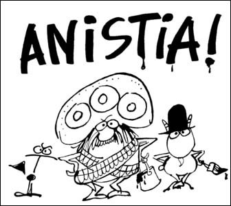

Responder a este comentário
Mondegreen, Virundum, Soramimi
por Giba Assis Brasil em 01 de outubro de 2009Em português também parece que tem palavra pra tudo, mesmo quando ela vem do inglês, às vezes de forma arrevesada. Mas nem sempre é assim.
Os anglófonos chamam o engano de audição de mondegreen? Pois em português ele também acontece, e muito: todo mundo tem uma história deste tipo pra contar. Em 1995, Mário Prata escreveu uma crônica no Estadão falando de uma amiga que morria de pena do Tumitinha, o pobre japonesinho da Ciranda cujo amor, no entendimento dela, "era pouco e se acabou". Pra ficar nas canções infantis, eu confesso que nunca fui com a cara da Dona Chica, aquela que "duberrou, duberrou" tanto que o gato, coitado, deu. E o meu pai jura que, quando criança, se aquela rua fosse dele, ele "mandava ela brilhar".
Há poucos dias, minha filha me mostrou uns vídeos de uma banda de Goiás que tem um humor que lembra um pouco os Mamonas Assassinas, e que adotou o estranho nome de "Pedra Letícia". Puxei um pouco pela memória e concluí: isso só pode ser um mondegreen de uma velha música do João Bosco, em que ele cantava "minha pedra é ametista / minha cor, o amarelo". Minha dúvida era apenas essa: onde será que esses caras, que devem ter pouco mais de 20 anos, ouviram essa música?
Pesquisando no Google, confirmei: os goianos inventaram várias histórias engraçadas pra explicar a origem do nome da banda, mas recentemente passaram a contar a mais provável delas: quando crianças, ouviram o Didi/ Renato Aragão brincar com a letra do João Bosco, trocando a pedra pelo nome da moça. Eu não lembrava (ou nunca soube) que aquela canção, "Bijuterias", tinha sido tema da novela "O Astro" em 1978. Na música popular, o mondegreen é tão comum que já virou reflexivo.
Já os hinos são aquelas músicas incompreensíveis que as crianças são obrigadas a decorar, e por isso se prestam para muitos mondegreens. Já falei aqui do "comorora" e da "impinjusta" do Hino Riograndense. Mas o nosso hino nacional brasileiro também é fértil: difícil saber o que é verdadeiro em memórias buscadas na infância, mas o Google está cheio de referências a "do que a terra Margarida", "verás que um filisteu não foge à luta", "terra dourada entre outras mil" e assim por diante.
Na época do Pasquim, que era também tempo de ditadura, brincar com o hino nacional era menos perigoso do que brincar com os generais que o levavam tão a sério. Pois foi aí que surgiu o "virundum". Parece que foi o Paulo Francis que inventou e o Henfil que popularizou o termo (em geral, no plural: "virunduns") para os muitos mal-entendidos provocados pela letra de Joaquim Osório Duque Estrada - e, por extensão, para qualquer discurso enrolado e com mais palavras que significados: "virundum piranga, imagens plásticas".
Virundum seria então a tradução em português, ainda não dicionarizada, do mondegreen? Talvez não. No mondegreen clássico, se é que podemos falar assim, o erro de audição cria um novo sentido, mesmo que deslocado do resto da letra ou do poema onde ele acontece, o que pode até causar efeito humorístico, principalmente quando o mal-entendido se esclarece. Minha impressão é que o virundum, ao contrário, já nasce com a intenção do humor: ao não entender o texto original, ou ao tentar desqualificá-lo, o ouvinte recria uma sequência de sons/ palavras que simplesmente não faz sentido. O virundum seria um mondegreen nonsense.
Para João Bosco e Aldir Blanc, autores de "O Bêbado e a equilibrista" (1979), o Brasil, na época em plena campanha pela anistia, sonhava "com a volta do irmão do Henfil, de tanta gente que partiu num rabo de foguete". A referência eram as cartas que o cartunista Henfil (1944-1988) escrevia na revista Isto É, planejando o momento em que seu irmão, o sociólogo Herbert de Souza, o Betinho (1935-1997), poderia voltar do exílio no México, como tantos outros brasileiros em situação semelhante. Mas quem, ao ouvir a música, entendeu "a volta do irmão doentio" estava percebendo um outro significado possível - um mondegreen. Um significado longe da realidade: Betinho, de volta ao Brasil, seria o criador do movimento "Ação da Cidadania contra a Fome" e, mesmo debilitado pela AIDS, nunca deixou de "comemorar a vida todas as manhãs", como ele mesmo disse - o contrário de uma pessoa doentia.
Por outro lado, se eu não gosto da sonoridade de uma frase e começo a buscar outras combinações de sons semelhantes, acho que eu não estou cometendo um mondegreen, mas sim construindo um virundum. Será essa a diferença? O mondegreen se comete, como um equívoco; o virundum se constroi, como um trocadilho?
E tem ainda o soramimi, que a Júlia Furtado já adiantou num comentário semana passada. Mas esse, de novo, fica pra depois.

Graúna, Zeferino e Bode Orellana: os personagens do Henfil também queriam o irmão de volta.
{kind=link}
TEM MAIS
O Alexandre Inagaki já escreveu sobre quase tudo isso há alguns anos.
A crônica de Mário Prata sobre a triste história de Tumitinha.
Entrevista dos caras do Pedra Letícia para a Revista Tag.